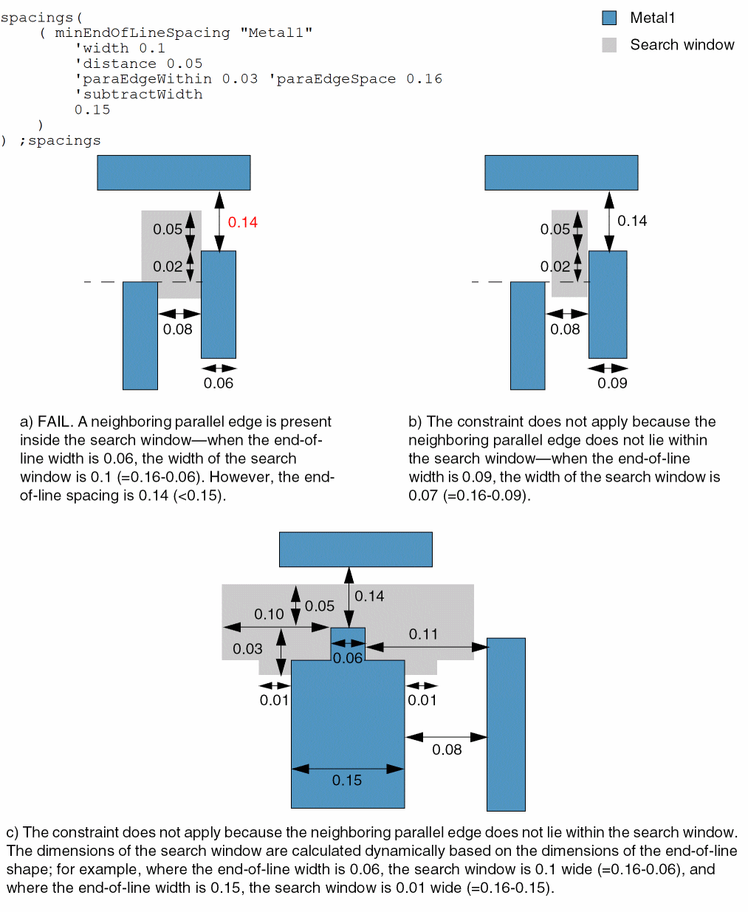
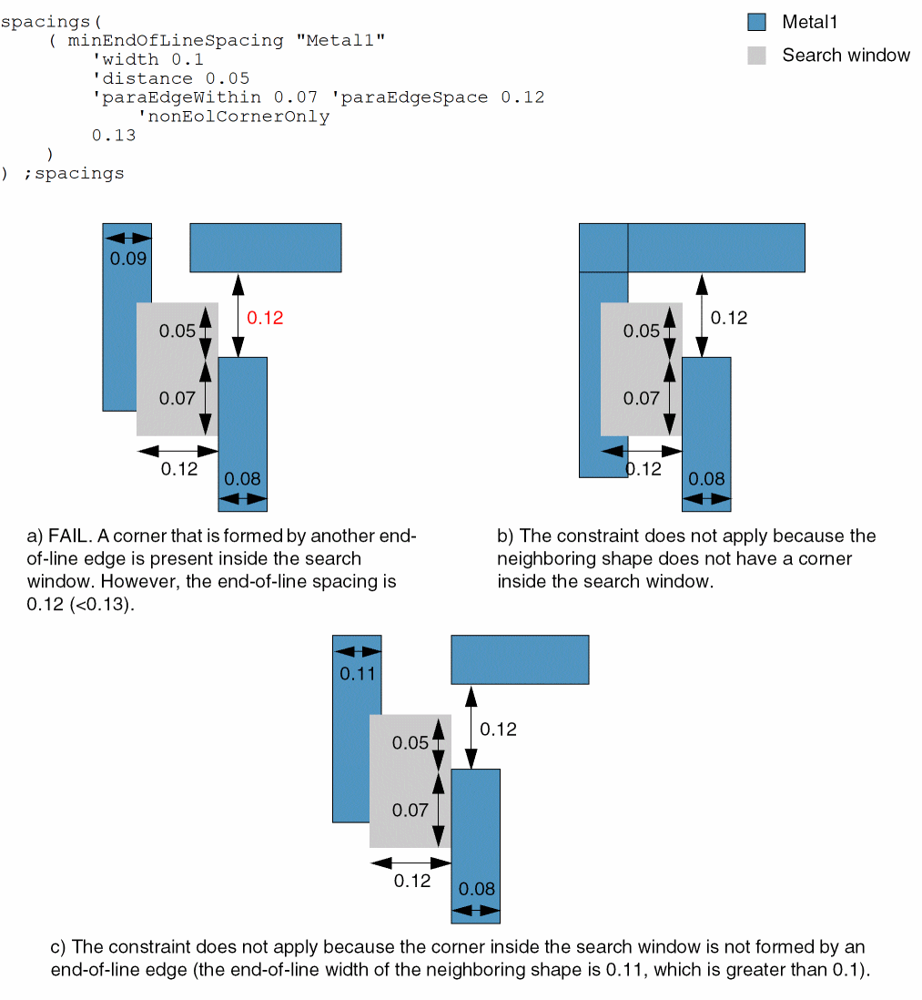
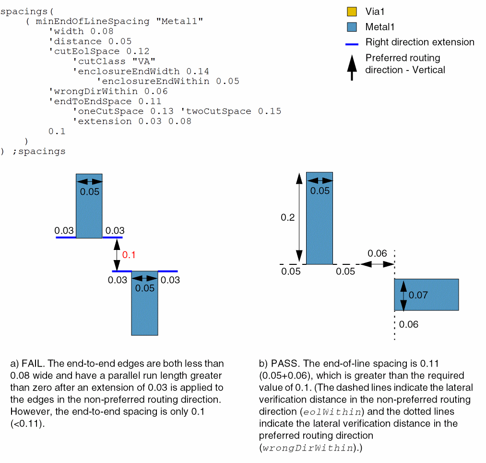
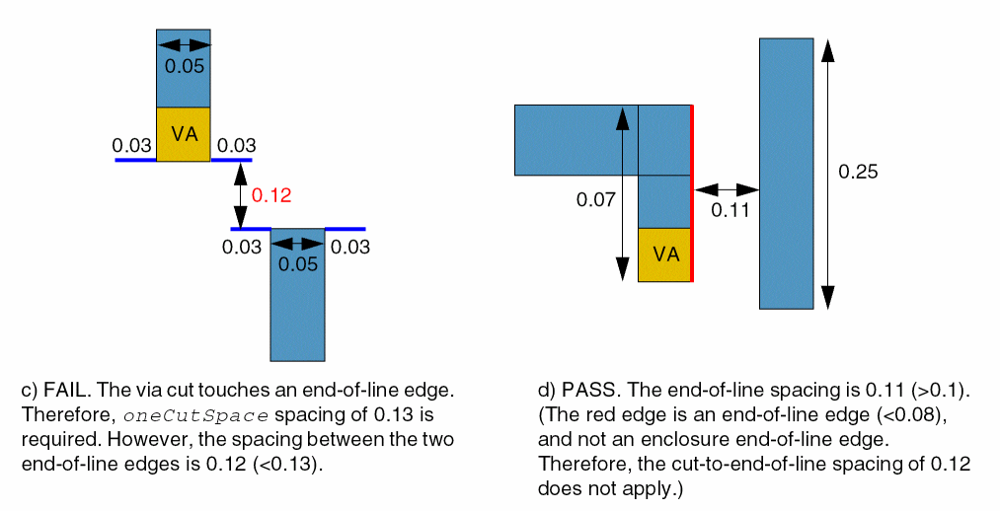
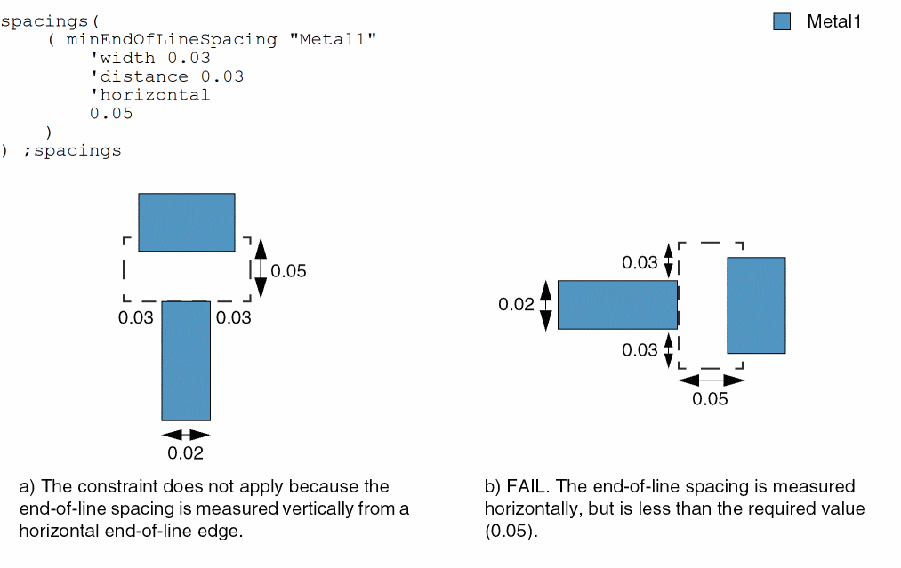
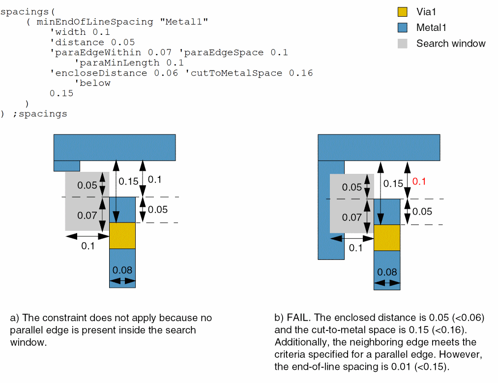

minEndOfLineSpacing
spacings( ( minEndOfLineSpacingtx_layer['horizontal | 'vertical] 'widthf_width['oppWidthf_oppWidth] 'distancef_eolWithin['negativePRL] ['paraEdgeWithinf_parWithin'paraEdgeSpacef_parSpace['paraEdgeCountx_edgeCount] ['subtractWidth] ['paraMinLengthf_parMinLength] ['sameMetal | 'sameNet] ['nonEolCornerOnly] ['prlf_prl] ['parallelSameMask] ] ['cutEolSpacef_cutEolSpace['cutClass {f_width| (f_width f_length) |t_name}] ['cutEolAbove | 'cutEolBelow] ['enclosureEndWidthg_enclosureEndWidth['enclosureEndWithing_enclosureEndWithin] ] ] ['widthRanges (g_ranges)] ['extendByf_extendBy] ['sizeByf_sizeBy] ['sameMask | 'diffMask] ['fillConcaveCornerf_fill] ['exactEolWidth] ['exceptExactEolWidth (f_exactWidthf_otherWidth)] ['wrongDirSpacef_wrongDirSpace] ['wrongDirWithinf_wrongDirWithin] ['endToEndSpacef_endToEndSpace['otherEndWidthf_otherEndWidth] ['oneCutSpacef_oneCutSpace] ['twoCutSpacef_twoCutSpace] ['extension {f_extension| (f_extension f_wrongDirExtension)}] ['bothWires]['equalRectWidth] ] ['maxLengthf_maxLength| 'minLengthf_minLength['twoSides]] ['encloseDistancef_encloseDist'cutToMetalSpacef_cutToMetalSpace['above | 'below] ['allCuts] ] ['exceptExactAligned] ['insideLayers (tx_layer1tx_layer2…tx_layerN) ['insidePurposes (t_purpose1t_purpose2…t_purposeN)] | 'outsideLayers (tx_layer1tx_layer2…tx_layerN) ['outsidePurposes (t_purpose1t_purpose2…t_purposeN)] ]f_eolSpace)
) ;spacings
This constraint can also be applied using the following legacy syntax:
spacings( ( minEndOfLineSpacingtx_layer(f_widthf_eolWithin[f_parWithin[f_parSpace[x_edgeCount]]]f_eolSpace) )
) ;spacings
Specifies the minimum edge-to-edge spacing between an end-of-line shape and neighboring parallel shapes that are within the specified region of the end-of-line shape on a layer. The number of supported neighboring parallel shapes is zero, one, or two. Typically, the spacing allowed using this constraint (eolSpace) is slightly larger than the minimum allowed spacing on the specified layer. However, the minimum allowed spacing must be greater than the lateral verification distance (eolWithin) for the spacing check.
If two face-to-face edges have width less than eolWidth and their parallel run length is greater than zero, end-to-end spacing (endToEndSpace) applies instead of eolSpace.
The following figure illustrates the two scenarios explained above:
The following figures illustrate how the constraint applies when either one or two parallel edges are present inside the search window defined by parSpace and parWithin (parallel-edge check). If the number of parallel edges specified is two, they must be present on either side of the end-of-line shape. Edge-to-edge spacing must be greater than or equal to eolSpace.
The following figures illustrate two more scenarios in which edge-to-edge spacing must be greater than or equal to eolSpace.
If the two shapes are perpendicular to each other, the lateral verification distance applied in the right and wrong direction is eolWithin and wrongDirWithin, respectively, as shown below.
In the following figures, you can see the right-direction and wrong-direction extensions applied to two shapes that are face-to-face. The spacing requirement varies based on the number of vias present.
Values
Parameters
|
(Virtuoso Advanced Node for Layout Standard) The direction in which the constraint applies. If direction is not specified, the constraint applies to all end-of-line edges. |
|
|
The constraint applies only if the end-of-line width is less than this value. |
|
|
The constraint applies only if a neighboring shape beyond the end-of-line edge has perpendicular span less than this value. |
|
|
The end-of-line edge is extended on both sides by this value to define an exclusion region. A violation occurs if the lateral distance between an end-of-line edge and a neighboring shape is less than this value (lateral distance for applying the spacing check). |
|
|
(Virtuoso Advanced Node for Layout Only) The constraint applies only if a neighboring shape has a parallel run length of less than zero with the shape having an end-of-line edge measured in the routing direction. |
|
|
The constraint applies only if the distance of a neighboring parallel shape from the end-of-line edge, measured along the end-of-line shape, is less than this value (parWithin). |
|
|
The constraint applies only if the lateral distance between an end-of-line shape and a neighboring parallel shape is less than this value (parSpace). |
|
|
The constraint applies only if the number of neighboring parallel shapes that satisfy both
Supported values are 0, 1, and 2. If this value is equal to |
|
|
The constraint applies only if the lateral distance between an end-of-line shape and a neighboring parallel shape is less than the value obtained after subtracting eolWidth from parSpace. |
|
|
The length of the end-of-line side must be greater than this value for a parallel edge on that side to be counted while applying the parallel-edge check. |
|
|
(Virtuoso Advanced Node for Layout Standard) The connectivity type. If connectivity type is not specified, the constraint applies to any connectivity type, including any two shapes on the same layer with no common metal or net.
The constraint does not apply if the neighboring edge on the side extends beyond the search window. |
|
|
The constraint does not apply if a corner inside the search window is formed by a non-end-of-line edge. |
|
|
The constraint applies only if the parallel run length between an end-of-line side and a neighboring edge is greater than this value. |
|
|
(Virtuoso Advanced Node for Layout Only) The constraint applies only if the neighboring parallel shape found inside the search window has the same mask as that applied to the end-of-line edge. A neighboring parallel shape with a different mask is ignored. |
|
|
The spacing between an end-of-line edge that touches a via cut on a cut layer above or below the metal layer and a non-end-of-line edge perpendicular to it must be greater than or equal to this value. |
|
|
The cut class to which the constraint applies, specified by width, by width and length, or by name (as defined in a cutClasses constraint). |
|
|
The cutEolSpace spacing is applied only if the metal end-of-line edge touches a shape on a cut layer above or below the metal layer, depending on the parameter specified. |
|
|
The constraint applies only if the width of the end-of-line edge touching a via cut is less than this value. |
|
|
The end-of-line edge intersecting a via cut is extended on both sides by this value, instead of eolWithin, to define the exclusion region. |
|
|
(Virtuoso Advanced Node for Layout Standard) The constraint applies only if the end-of-line width is in the specified range.
Type: Floating-point values specifying a |
|
|
(Virtuoso Advanced Node for Layout Standard) An extension equal to this value is applied to an end-of-line edge in the projection direction before the constraint is applied. The extension is applied to both shapes, and not just to the end-of-line shape. |
|
|
(Virtuoso Advanced Node for Layout Standard) An end-of-line edge is extended on both sides by this value before the constraint is applied. |
|
|
(Virtuoso Advanced Node for Layout Only) A concave corner that is in the neighborhood of an end-of-line edge is filled with a triangular shape whose sides measured along the concave edges are equal to this value before the spacing between the concave corner and the end-of-line edge is measured. |
|
|
(Virtuoso Advanced Node for Layout Standard) The constraint applies only if the end-of-line width is equal to this value. |
|
|
(Virtuoso Advanced Node for Layout Only) The constraint does not apply if the end-of-line width is equal to exactWidth and the width of the neighboring edge is less than or equal to otherWidth. |
|
|
(Virtuoso Advanced Node for Layout Standard) The edge-to-edge spacing measured in the wrong direction (non-preferred routing direction) must be greater than or equal to this value. |
|
|
An end-of-line edge of a shape in the non-preferred routing direction is extended on both sides by this value, instead of eolWithin, to form the exclusion region. When this parameter is specified, the eolWithin value applies only to the end-of-line edges of shapes in the preferred routing direction. |
|
|
The spacing between two end-of-line edges that face each other and have parallel run length greater than zero must be greater than or equal to this value. |
|
|
The constraint applies only if a shape facing an end-of-line edge has width less than this value. This parameter can be specified with or without |
|
|
The spacing between two end-of-line edges, one of which touches a via cut, must be greater than or equal to this value. |
|
|
The spacing between two end-of-line edges, both of which touch a via cut each, must be greater than or equal to this value. |
|
|
|
|
|
|
|
The constraint does not apply if both sides of the end-of-line shape are greater than this value in length. |
|
|
The constraint does not apply if both sides of the end-of-line shape are less than this value in length. |
|
|
The constraint applies only if both sides of the end-of-line shape are greater than or equal to minLength. |
|
|
(Virtuoso Advanced Node for Layout Standard) The spacing between two end-of-line edges must be greater than or equal to endToEndSpace if the length of both the shapes is greater than or equal to minLength or less than or equal to maxLength, depending on which of the two parameters, |
|
|
The constraint applies only if the length of the end-of-line edge is equal to the width of the shape. If multiple |
|
|
The constraint applies only if there is a via cut above or below the metal layer and the distance between the via-cut edge and the end-of-line edge is less than this value. |
|
|
The constraint applies only if the distance between the via-cut edge and the edge facing the end-of-line edge is less than this value. |
|
|
The constraint applies to a shape on a cut layer either above or below the metal layer. If this parameter is not specified, the constraint applies to shapes on cut layers both above and below the metal layer. |
|
|
The constraint applies to all cuts that connect a same-metal shape, both above and below the metal layer. Otherwise, only one such via cut needs to satisfy the constraint. |
|
|
(Virtuoso Advanced Node for Layout Standard) The constraint applies only if the shapes are not exactly aligned. |
|
|
|
|
|
Determines if the constraint applies, based on the presence or absence of one or more layers.
For more information, see |
|
|
The |
|
|
The |
|
Examples
- Example 1: minEndOfLineSpacing with widthRanges and exactEolWidth
- Example 2: minEndOfLineSpacing with oppWidth and minLength
- Example 3: minEndOfLineSpacing with paraEdgeWithin, paraEdgeSpace, and subtractWidth
- Example 4: minEndOfLineSpacing with endToEndSpace, minLength, and twoSides
- Example 5: minEndOfLineSpacing with widthRanges, extendBy, and sizeBy
- Example 6: minEndOfLineSpacing with widthRanges, extendBy, sizeBy, and endToEndSpace
- Example 7: minEndOfLineSpacing with paraEdgeWithin, paraEdgeSpace, and sameMetal
- Example 8: minEndOfLineSpacing with diffMask, endToEndSpace, and exceptExactAligned
- Example 9: minEndOfLineSpacing with fillConcaveCorner
- Example 10: minEndOfLineSpacing with exceptExactEolWidth
- Example 11: minEndOfLineSpacing with paraEdgeWithin, paraEdgeSpace, and nonEolCornerOnly
- Example 12: minEndOfLineSpacing with equalRectWidth
- Example 13: minEndOfLineSpacing with cutEolSpace, wrongDirWithin, and endToEndSpace
- Example 14: minEndOfLineSpacing with horizontal
- Example 15: minEndOfLineSpacing with paraEdgeWithin, paraEdgeSpace, paraMinLength, encloseDistance, and cutToMetalSpace
- Example 16: minEndOfLineSpacing with width, eolWithin, parWithin, parSpace, and edgeCount
Example 1: minEndOfLineSpacing with widthRanges and exactEolWidth
The end-of-line spacing between Metal1 wires must be at least 0.09 if the end-of-line width is greater than or equal to 0.05 and less than 0.1, and at least 0.07 if the end-of-width is equal to 0.1.
Example 2: minEndOfLineSpacing with oppWidth and minLength
The end-of-line spacing between Metal1 wires must be at least 0.12 when the minimum length of an end-of-line side is less than 0.06 and the width of the wire perpendicular to the end-of-line edge is 0.08. The lateral verification distance for the spacing check is 0.05.
Example 3: minEndOfLineSpacing with paraEdgeWithin, paraEdgeSpace, and subtractWidth
The end-of-line spacing between Metal1 wires must be at least 0.15 if the following conditions are met:
- The end-of-line width is less than 0.1.
-
A parallel neighboring edge is present inside the search window defined by eolWithin = 0.05, parWithin = 0.03, and parSpace = 0.16. The dimensions of the search window are calculated dynamically based on the end-of-line width of the wire.

Example 4: minEndOfLineSpacing with endToEndSpace, minLength, and twoSides
The end-of-line spacing between Metal1 wires must be at least 0.1 and the end-to-end spacing must be at least 0.12 if the length of both end-of-line sides is greater than or equal to is 0.11.
Example 5: minEndOfLineSpacing with widthRanges, extendBy, and sizeBy
The end-of-line spacing must be at least 0.3 when measured in the vertical direction if the end-of-line edge has width less than or equal to 0.3 or equal to 0.6 or to 0.8. The spacing is measured after applying an extension of 0.2 to the end-of-line edge in the projection direction (extendBy) and 0.1 on both sides of the end-of-line edge (sizeBy).
Example 6: minEndOfLineSpacing with widthRanges, extendBy, sizeBy, and endToEndSpace
The end-of-line spacing must be less than 0.3 and end-to-end spacing must be equal to 0.3 if the end-of-line edge has width less than or equal to 0.3 or equal to 0.6 or to 0.8. The spacing is measured after applying an extension of 0.2 to the end-of-line edge in the projection direction (extendBy) and 0.1 on both sides of the end-of-line edge (sizeBy).
Example 7: minEndOfLineSpacing with paraEdgeWithin, paraEdgeSpace, and sameMetal
The end-of-line spacing between Metal1 wires must be at least 0.13 if a parallel edge present inside the search window is part of a contiguous same-metal shape. The search window is defined by eolWithin = 0.05, parWithin = 0.07, and parSpace = 0.12.
Example 8: minEndOfLineSpacing with diffMask, endToEndSpace, and exceptExactAligned
The end-of-line spacing must be at least 0.11 and end-to-end spacing must be at least 0.13 between non-exactly-aligned wires on different masks if the end-of-line edge has width less than 0.08. The lateral verification distance for the spacing check is 0.02.
Example 9: minEndOfLineSpacing with fillConcaveCorner
A concave corner present in the neighborhood of an end-of-line edge must be filled by a triangle whose sides along the concave edges are equal to 0.04 before end-of-line spacing of 0.06 is applied. The end-of-line width of the wire must be less than 0.1.
Example 10: minEndOfLineSpacing with exceptExactEolWidth
The end-of-line spacing between Metal1 wires must be at least 0.06 except if the end-of-line width of one shape is equal to 0.07 and the end-of-line width of the other shape is less than 0.05.
Example 11: minEndOfLineSpacing with paraEdgeWithin, paraEdgeSpace, and nonEolCornerOnly
The end-of-line spacing between Metal1 wires must be at least 0.13 if the following conditions are met:
- The end-of-line width is less than 0.1.
- A corner inside the search window is formed by another end-of-line edge.
-
A parallel edge is present inside the search window defined by eolWithin = 0.05, parWithin = 0.07, and parSpace = 0.12.

Example 12: minEndOfLineSpacing with equalRectWidth
The end-of-line spacing between Metal1 wires must be at least 0.15 if the end-of-line width is equal to the width of the wire. The end-of-line width must be less than 0.25 and the lateral verification distance for the spacing check is 0.10.
Example 13: minEndOfLineSpacing with cutEolSpace, wrongDirWithin, and endToEndSpace
-
The end-of-line spacing between Metal1 wires must be at least 0.1 if the following conditions are met:
- The end-of-line width is less than 0.08.
- The lateral verification distance for the spacing check is 0.05 for a shape routed in the preferred routing direction (eolWithin).
- The lateral verification distance for the spacing check is 0.06 for a shape routed in the non-preferred direction (wrongDirWithin).
- The required edge-to-edge spacing between Metal1 wires must be at least 0.12 if the following conditions are met:
-
The end-to-end spacing between Metal1 wires must be greater than or equal 0.11 if the end-of-line edges do not touch a via cut, greater than or equal to 0.13 if an end-of-line edge touches a via cut, and greater than or equal to 0.15 if both end-of-line edges touch a via cut each. The right direction extension is 0.03 and the wrong direction extension is 0.08.

Example 14: minEndOfLineSpacing with horizontal
The end-of-line spacing between Metal1 wires must be at least 0.05 when measured in the horizontal direction if the following conditions are met:
- The end-of-line width is less than 0.03.
-
The lateral verification distance for the spacing check is 0.03.

Example 15: minEndOfLineSpacing with paraEdgeWithin, paraEdgeSpace, paraMinLength, encloseDistance, and cutToMetalSpace
The end-of-line spacing between Metal1 wires must be at least 0.15 if the following conditions are met:
- The width of the end-of-line shape is less than 0.1 (eolWidth) and the length of the end-of-line side is greater than or equal to 0.1 (paraMinLength).
- A parallel edge is present inside the search window defined by eolWithin = 0.05, parWithin = 0.07, and parSpace = 0.1.
-
The distance of a via cut below the metal layer to the end-of-line edge is less than 0.06 (enclosed distance) and to an edge beyond the end-of-line edge is less than 0.16 (cut-to-metal space).

Example 16: minEndOfLineSpacing with width, eolWithin, parWithin, parSpace, and edgeCount
The end-of-line spacing, or eolSpace, between Metal1 wires must be at least 0.43 if:
spacings(
( minEndOfLineSpacing "Metal1"
(0.11 0.12 0.13 0.14 15 0.43 )
) ;spacings
Example 17: minEndOfLineSpacing with distance and negativePRL
The end-of-line spacing must be at least 0.023 with other parameters as indicated. The constraint applies only if the parallel run length measured in the routing direction is negative.
Return to top